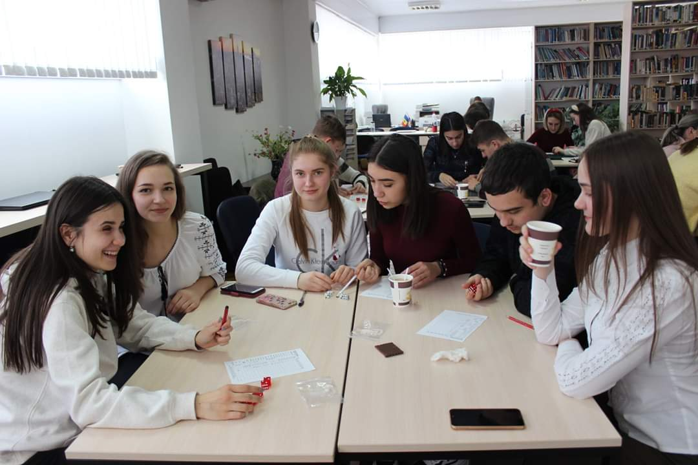
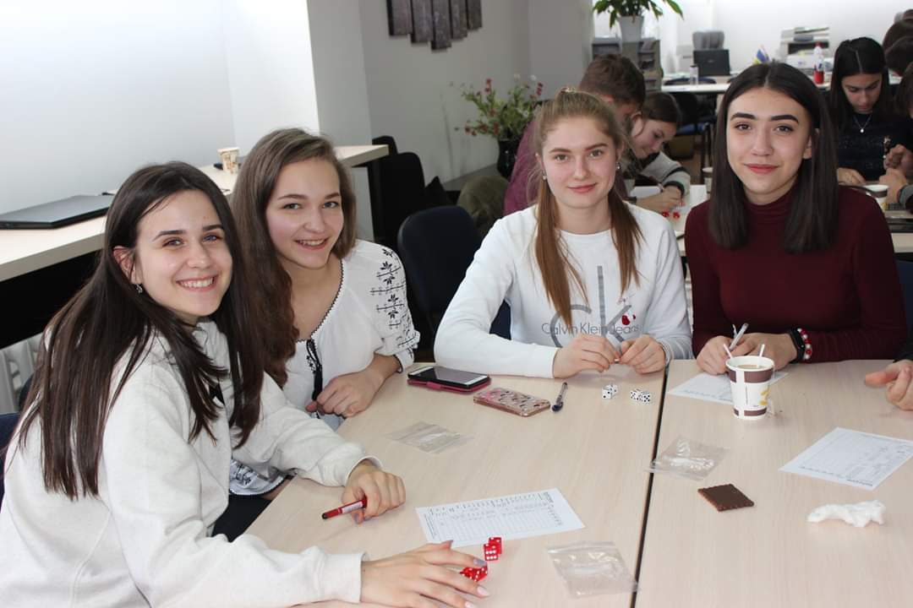
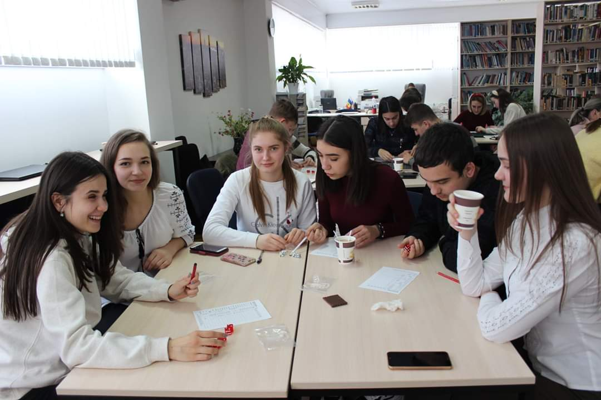
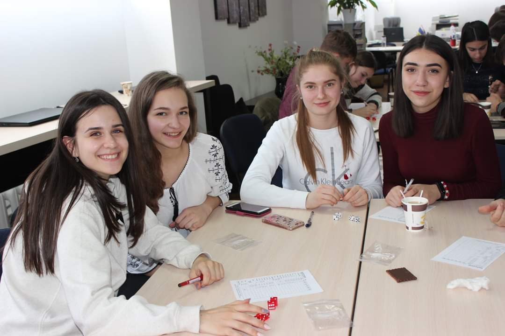

Home
An English Speaking Club is one of the best ways to improve Spoken English. Our club allows English language learners to practice speaking in an informal, relaxed environment. English Language teachers Guțu Ludmila and Magu Elena are the initiators and coordinators of the English Speaking Club "Speak to Lead". If you are looking to get fluency in English and gain confidence, our club is a great place to start practicing. Improving spoken English is all about practice. The more time you can spend everyday speaking in English, the faster you will improve
We're all in this together to create a welcoming environment. Let's treat everyone with respect. Healthy debates are natural, but kindness is required. Make sure everyone feels safe. Bullying of any kind isn't allowed, and degrading comments about things like race, religion, culture, sexual orientation, gender or identity will not be tolerated.
Vision
To develop and nurture confident and expressive ENGLISH language speakers who can express their ideas and thoughts confidently in the public with fluency.
Mission
To develop the interest and love for the English language through Public Speaking..
Objectives
- To develop the English communicative skill among the students;
- To increase the English vocabulary among the students
- Practicing language and writing skills for effective communications.
 




WHY SPEAK TO LEAD?
|
Being a good teacher is extremely important, and a good teacher is someone who a student will remember and cherish for the rest of their lives. If I can have a positive impact on their future, I feel I am doing my job well. I am an effective communicator, both in writing and verbally and I have a strong ability to plan and organise effectively; something which is crucial to the role of a competent teacher. A teacher must be able to communicate the classroom’s curriculum in an effective and organized manner that the students will be able to understand. This way, the students will know precisely what is expected of them, including understanding due dates for specific homework tasks or assignments so that students can deliver the work successfully. |

|
|
If a student does not fully grasp or understand the expectations or directions of a particular task or assignment, it is crucial for the teacher to communicate them to the best of his or her abilities. I cope very well with pressure and can adapt my style or teaching methods, when needed, to deliver consistent results. I have an understanding of the bigger picture and the pressures that are placed on the school. I am someone who always implements effective behaviour management processes in the classroom and strive myself on an ability to continually develop both personally and professionally. |